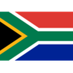

Mexiko na domácím MS 2026: kletba osmifinále trvá
Domácí mundial se pro Mexiko zastavil v osmifinále, zase: 2:3 s Anglií 5. července na Estadio Azteca, navzdory závěrečnému náporu proti deseti.

Jak turnaj skončil
Domácí mundial se pro Mexiko zastavil v osmifinále, zase: 2:3 s Anglií 5. července na Estadio Azteca, navzdory závěrečnému náporu proti deseti.
Mexiko na MS 2026: přehled
Cesta turnajem skončila v osmifinále.
Klíčoví hráči
Hráči podle výkonu a odehraných minut.


Mexiko: zápasy na MS 2026
Dosavadní průběh turnaje — 4 výher, 0 remíz a 1 proher.
2026
 InghilterraDomácí
InghilterraDomácí2026
 EcuadorDomácí
EcuadorDomácí2026
2026
 Corea del SudDomácí
Corea del SudDomácí2026

SudafricaDomácíSilné a slabé stránky
Silné stránky. Domácí výhoda dlouho fungovala: skupina vyhraná bez obdrženého gólu, Ekvádor poražený v šestnáctifinále a Azteca hnala tým do poslední minuty.
Slabé stránky. Proti prvnímu velkému soupeři přišlo potvrzení: skok kvality chybí. Ani v přesilovce po červené Quansaha Tri vyrovnat nedokázalo.
Klíčoví hráči týmu
Pod vedením trenéra Javier Aguirre jsou klíčovými hráči Guillermo Ochoa, Edson Álvarez, Julián Quiñones.
Historie na MS
Nejlepší výsledek čtvrtfinále jako pořadatelská země (1970 a 1986). Kletba osmifinále udeřila i na domácím šampionátu.
Bilance turnaje
Cíl byl jasný — prolomit kletbu osmifinále. Nepovedlo se ani doma. Zůstává důstojný turnaj zakončený se vztyčenou hlavou proti Anglii.
 Španělsko · kurz 1,67
Španělsko · kurz 1,67Ostatní favorité


Časté dotazy
Proč Mexiko vypadlo z MS 2026?
V osmifinále prohrálo 2:3 s Anglií na Estadio Azteca.
Prolomilo Mexiko kletbu osmifinále?
Ne — vypadlo v osmifinále i jako spolupořadatel.
Jak Mexiku vyšla skupina?
Výborně: první místo bez jediného obdrženého gólu.
Kdo dal góly Anglie na Aztece?
Skóroval mimo jiné Harry Kane; Anglie dohrávala v deseti po červené kartě Quansaha.
Mistrovství světa 2026 se poprvé hraje ve třech zemích – a pro El Tri mělo domácí prostředí znamenat konečně prolomení prokletí. Nestalo se. Mexiko vypadlo 5. července v osmifinále, když na legendární Aztece podlehlo Anglii 2:3. Kletba, kterou zná každý mexický fanoušek nazpaměť, přežila i domácí šampionát. Pojďme si to rozebrat po lopatě – jak cesta vypadala, čím to zase nevyšlo a co z toho plyne.
Mohlo Mexiko vyhrát doma?
Buďme upřímní – El Tri nikdy mezi favority na celkový triumf nepatřilo a domácí turnaj na tom nic nezměnil. Skupinou ale tým prošel jako nůž máslem a chvíli to vypadalo, že podpora davů vynese mužstvo dál, než by čekal papír. Osmifinálová bariéra se ovšem ukázala silnější než šedesát tisíc lidí na Aztece.
Jak vypadala cesta turnajem
Skupinová fáze byla nejlepší za roky:
- 2:0 s Jihoafrickou republikou
- 1:0 s Jižní Koreou
- 3:0 s Českem – bolestivý večer pro české fanoušky, El Tri náš nároďák přejelo bez zaváhání
Ve dvaatřicítce přidalo Mexiko výhru 2:0 nad Ekvádorem. Čtyři zápasy, čtyři výhry, čtyři čistá konta – před osmifinále nedostalo El Tri ani gól a euforie v celé zemi rostla s každým kolem.
Osmifinále: Anglie a konec na Aztece
5. července, Estadio Azteca. Zápas, který měl všechno: góly, drama, červenou kartu Quansaha na anglické straně – a závěr proti deseti. Mexiko za stavu 2:3 tlačilo, jak jen to šlo, jenže vyrovnávací gól nepřišel. Anglie odvezla výhru 3:2 (trefil se mimo jiné Harry Kane) a El Tri zůstalo doma. Znovu. V osmifinále.
Od roku 1994 je to už osmý šampionát v řadě, kdy Mexiko končí právě v prvním vyřazovacím kole. Doma to bolí dvojnásob.
Co se pokazilo
- Killer instinkt – proti deseti Angličanům Mexiko přesilovku nezužitkovalo. Přesně tohle je rozdíl mezi dobrým a velkým týmem.
- Chybějící světová třída v ofenzivě – Quiñones a spol. odehráli slušný turnaj, ale v klíčové chvíli nebyl nikdo, kdo by vzal zápas na sebe.
- Tíha okamžiku – domácí osmifinále na Aztece je maximální možný tlak. A tlak je přesně to, co El Tri v téhle fázi historicky sváže nohy.
Na druhou stranu: skupina bez ztráty bodu, čtyři výhry z pěti zápasů a předvedený fotbal, za který se tým stydět nemusí. Jen ta jedna bariéra prostě zase nepadla.
Kurzy: trh je uzavřený
Vyřazením se trh na mexický titul zavřel. Kurzy kolem 40.00–60.00 před turnajem mluvily jasně a bookmakeři se nemýlili. Kdo vsadil na postup ze skupiny, inkasoval; tiket na „překonání osmifinále" – historicky nejlákavější mexická sázka – zase nevyšel.
Turnaj jede dál se čtyřkou Francie (2.49), Španělsko (4.30), Anglie (4.37), Argentina (5.63). Pikantní detail: kdo chce Mexiko aspoň nepřímo „pomstít", může fandit Argentině proti Anglii v semifinále 15. července.
Co dál pro El Tri
Generační jádro, které doma nasbíralo zkušenost z plných stadionů, bude v roce 2030 na vrcholu. Osmifinálová kletba se stala národním tématem a její prolomení je teď jasně formulovaný cíl celé federace. Základ – organizovaná obrana a rychlá křídla – funguje; chybí ten jeden rozdílový útočník.
Tip: co s tím jako sázkař?
Mexiko je mimo hru, El Tri trhy zamrzly. Pozornost teď patří semifinále: Francie–Španělsko 14. července v Dallasu a Argentina–Anglie 15. července v Atlantě, finále 19. července na MetLife.
A pamatuj – sázení má být zábava, ne způsob, jak řešit peníze. Sázej s hlavou a jen tolik, kolik uneseš. Kdyby to přerůstalo přes hlavu, existuje pomoc pro zodpovědné hraní.